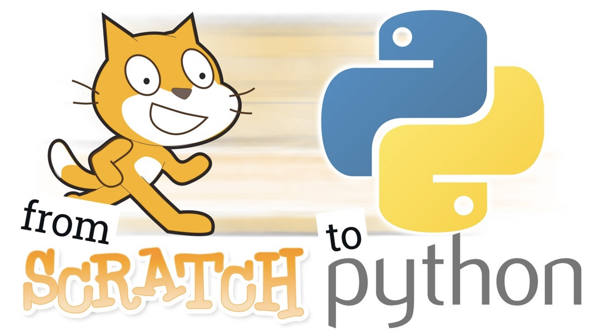
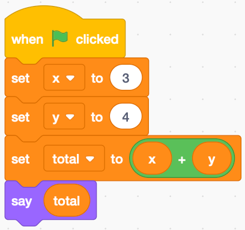
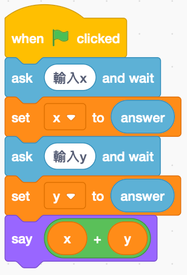
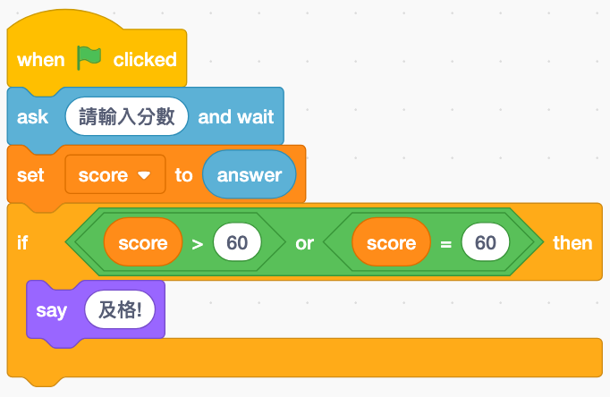
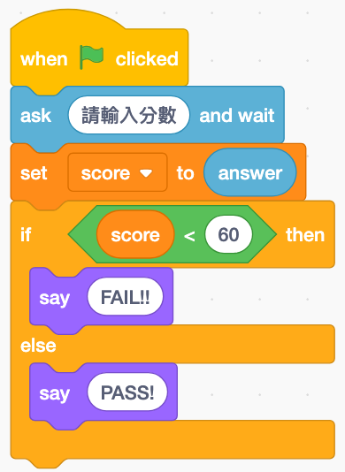

20251127 資訊科技應用專題:從Scratch到Python(雲林場)
Table of Contents
.svg?style=plastic)
1. 【課程資訊】

1.1. 注意事項
- 參加對象：國中非資訊專長教師
- 起點行為：少部份有學過Scratch，可能有人沒有程式設計經驗
- 教學目標：了解程式設計的基本概念，能使用Python進行簡單的程式設計
- 教學方式：講解與實作並重，強調動手操作與
- 教學時間：1天，6小時，上午3小時，下午3小時
2. 【教材1】Python 與 AI 時代的程式思維
2.1. 程式的核心概念
所謂程式設計，說穿了就是「解決問題的方法」。而所謂的問題解決，其實就是「把一個大問題拆解成小步驟」，然後一步一步去完成它。而這些步驟，通常可以用「輸入、處理、輸出」來描述。
其中，輸入是指我們從外部取得的資料，處理是指我們對這些資料進行的運算或邏輯判斷，而輸出則是指我們將結果呈現給使用者或其他系統。
因此，程式設計的核心概念可以總結為：
- 輸入（Input）：取得資料
至於資料的來源，可以是使用者透過鍵盤、滑鼠、手機觸控面板輸入的資料、從檔案中讀取的資料、從感測器取得的資料，甚至是從網頁上抓取的資料等。 - 處理（Process）：對資料進行運算或邏輯判斷
處理的方式可以是簡單的條件判斷、數學運算，或者是複雜的邏輯流程等。這些處理步驟會根據不同的需求而有所不同。 - 輸出（Output）：將結果呈現給使用者或其他系統
輸出的方式也有很多種，可以是將結果顯示在畫面上、存檔到檔案中、回應網頁請求，或者是控制硬體設備等。
Figure 1: 程式設計的核心概念：輸入、處理、輸出
2.2. Python 是什麼？
Python 是一種高階程式語言，由 Guido van Rossum 在 1991 年開發完成。它的設計理念是強調程式碼的可讀性和簡潔性，使得程式設計師能夠更容易地撰寫和維護程式碼。
和我們熟悉的C或C++等低階語言相比，Python 提供了更高層次的抽象，讓程式設計師可以更專注於解決問題本身，而不需要過多關注底層的細節。
Python的主要特點包括：
- 簡潔易讀的語法: 強調可讀性，讓程式碼更容易理解
- 豐富的標準函式庫: 提供大量內建功能，減少重複造輪子
- 強大的第三方套件生態系統: 支援資料科學、機器學習、網頁開發等多種應用
- 跨平台支援:Windows、macOS、Linux等多種作業系統皆可使用
- 廣泛的應用領域: 從網頁開發、資料分析、人工智慧到自動化腳本等皆有應用
2.3. 生活中的 Python 應用
2.3.1. 自動批改 & 小助教工具
Python 可以幫老師快速批改選擇題、填空題或簡單運算題，節省行政時間。學生也能用 Python 練習做小型批改程式，理解邏輯流程。
2.3.2. 學校成績 / 班級統計分析
將 Google Form / Excel 匯出資料丟給 Python，就能畫出 長條圖、折線圖、排名、平均趨勢，很適合導師、科任老師做學習診斷分析。
2.3.3. 教務 / 課務小工具
用 Python 製作簡單工具，例如：
- 快速從座號自動生成「隨機點名」
- 自動排座位
- 自動整理成績單或聯絡簿格式
2.3.4. 生活資訊小程式
學生可以做出貼近生活的小作品：
- 天氣查詢
- 今日運勢
- 小算盤、單位換算（溫度、長度、金額）
- 英文單字小測驗
2.3.5. 簡易遊戲開發
使用 Python 建出小遊戲，例如：
- 猜數字
- 反應力遊戲
- 文字冒險遊戲
讓學生更有成就感，也很適合課堂展示。
2.3.6. 圖像處理的簡單應用（改成非 AI 專業版）
Python 可以做：
- 圖片裁切
- 拼貼
- 加上標籤或浮水印
很適合作為「資訊科技課的小專題」。
2.3.7. 文書自動化（老師最愛）
讓 Python 自動幫你：
- 批次產生 Word 報告（例如學生成果報告模板）
- 產生 Excel 表格（例如座位表、成績表、自訂清單）
- 自動產生簡報（PowerPoint）
讓教師行政流程更有效率。
2.3.8. 網頁小作品（簡易版）
使用 Python 的工具（如 Flask、Streamlit），學生可以做出簡單的互動網站：
- 小問卷
- 點選式互動工具
- 作品展示頁
適合資訊課、專題課程、彈性課程。
2.4. 今天的目標
老師能在今天完成幾個「即時互動小工具」
- BMI 計算器
- 課堂抽籤小工具
- 成績統計小工具
以上兩個小工具的各種不同版本：
- 純文字版
- Colab Widgets 互動版
- Gradio 互動版
3. 【教材2】Scratch 與 Python 的差異
Scratch 和 Python 都是程式設計語言，但它們的設計理念和使用方式有很大的不同。Scratch 是一種積木式的程式設計語言，主要針對初學者和兒童設計，讓使用者可以透過拖拉積木來組合程式邏輯，降低學習門檻。而 Python 則是一種文字式的程式設計語言，更適合用於真實世界的應用，具有更強大的功能和靈活性。
其實，類似Scratch這種積木式的程式設計語言，還有以下幾種常見的工具：
- App Inventor（用於開發 Android 應用程式）
- Niotron（App Inventor 的進階版本）
- Gamefroot（用於遊戲開發）
- Arduino Blocks（用於 Arduino 開發）
- LEGO Mindstorms（用於機器人設計）
以上這些工具和 Scratch 一樣，都是透過積木式的方式來讓使用者學習程式設計的基本概念。
然而，這種積木式的程式設計語言雖然易於入門，但在實際應用中往往會遇到一些限制。例如，Scratch 雖然可以用來做簡單的遊戲和動畫，但在：
- 處理複雜的資料結構
- 建構大型專案
- 使用外部函式庫
- 進行網路 API 串接
- 執行高效能運算
- 開發跨平台應用
等方面，就會出現瓶頸。
其實，只要從一個簡單的事實就能了解積木式語言的限制：現代世界的大型軟體、網站、AI 應用、資料分析系統……沒有任何一個是用積木式語言打造的。原因很簡單：
- 積木式語言強調「教學友善」，不是為產業需求設計
- 隨著專案變大，積木會變得難以管理
- 積木式語言本身不具備強大的計算或資源整合能力
- 儘管易懂，但擴充性與效能有限
- 因此，**積木式 → 文字式語言（如 Python）**是自然的學習進階路徑。
因此，當學生在 Scratch 上有了一定的基礎後，轉向 Python 會是一個很自然的過程。Python 不僅能夠處理更複雜的問題，還能夠接觸到更多元的應用領域，例如資料科學、人工智慧、網頁開發等。
4. 【教材3】程式開發工具（IDE）介紹
Python 有很多不同的開發環境（IDE），每個 IDE 都有其優缺點和適用場景。以下是幾個常見的 Python 開發環境：
4.1. Google Colab
由Google提供的免費雲端Jupyter Notebook服務，適合初學者和資料科學家使用。
4.1.1. 優點：
- 雲端運算，不需安裝軟體
- 免費使用 GPU 和 TPU，加速運算
- 支援Google Drive，方便儲存和分享
- 支援Copilot等AI協作工具
- 以Cell為單位，方便分段執行和測試程式碼
4.1.2. 缺點：
- 需要網路連線
- 資源有限，長時間運算可能會中斷
4.2. 單機版IDE: VS Code / PyCharm
兩款功能強大的本地端開發環境
4.2.1. 優點：
- 功能強大，支援多種語言和擴充套件
- 可離線使用，不需網路連線
- 支援版本控制（如Git）
- 可自訂化介面和快捷鍵
4.2.2. 缺點：
- 需要安裝和設定，對初學者較不友善
- 需要較高的系統資源
4.3. Google Colab 示範
- 開啟 Colab 網站（https://colab.research.google.com/）
- 登入 Google 帳號
- 建立新的 Notebook
- 介紹基本操作介面
- Cell 的種類（程式碼、文字）
- Cell 的執行方式（Shift + Enter）
- 工作環境設定（Python 版本、硬體加速、雜項設定、AI 工具）
- Cell 的種類（程式碼、文字）
- 執行第一個 Python 程式碼
- 儲存與分享 Notebook
5. 【教材4】Python 基本語法（上）
以下範例說明 Python 的基本語法，並與 Scratch 進行對比。
5.1. 輸出與輸入
5.1.1. 輸出
Scratch 範例回顧
Figure 2: Scratch 輸出範例
Python同步驟實作
1: print("Hello, World!") # 輸出文字到螢幕
Hello, World!
輸出的進階設定
- print( 項目 1, [ 項目 2, … , sep = 分隔字元 , end = 結束字元 ] )
- sep (分隔字元) 預設為空白字元
- end (結束字元) 預設為換行字元“\n”
1: print("Hello", "World", 123, "LALALA") # 使用自訂分隔字元和結束字元 2: print("Hello", "World", 123, "LALALA", sep=",") # 使用逗號作為分隔字元 3: print("Hello", end=" ") # 使用空格作為結束字元 4: print("Hello", end=" ") # 使用空格作為結束字元 5: print("Hello", end=" ") # 使用空格作為結束字元
Hello World 123 LALALA Hello,World,123,LALALA Hello Hello Hello
5.1.2. 變數設定
Scratch 範例回顧

Figure 3: Scratch 變數設定範例
Python同步驟實作
1: x = 3 2: y = 4 3: total = x + y # 記得不要用變數sum，因為它是Python內建函式名稱 4: print(total) # 輸出結果
7
5.1.3. 變數輸入
Scratch 範例回顧

Figure 4: Scratch 變數設定範例
Python同步驟實作
1: x = input("輸入x：") # 從使用者取得輸入 2: y = input("輸入y：") # 從使用者取得輸入 3: total = x + y # 注意：input取得的值是字串 4: print(total) # 輸出結果
這裡要特別說明，input() 函式取得的輸入值預設是字串型態，因此如果要進行數學運算，需要先將其轉換為數字型態，例如使用 int() 或 float() 函式。
1: x = int(input("輸入x：")) # 從使用者取得輸入並轉換為整數 2: y = int(input("輸入y：")) # 從使用者取得輸入 3: total = x + y # 現在可以進行數學運算 4: print(total) # 輸出結果
5.2. 變數與資料型態
- 數字
- 字串
- 布林值
- 清單（list）
5.2.1. 各種變數的指定與操作範例
1: a = 5 2: a += 1 # 相當於 a = a + 1，還有 -=, *=, /= 3: b = 3.14 4: c = 'TNFSH' 5: x = y = z = 10 6: name, number = 'TNFSH', 35 # 多個變數一同指派 7: print('a: ', a) 8: print('b: ', b) 9: print('c: ', c) 10: print('x, y, z: ', x, y, z) 11: print('name, number: ', name, number)
a: 6 b: 3.14 c: TNFSH x, y, z: 10 10 10 name, number: TNFSH 35
5.2.2. 複雜的數學運算
有些數學運算需要使用到特定的函式庫，例如開根號、次方、三角函式等，可以使用 Python 的內建 math 模組。
1: import math 2: x = 16 3: sqrt_x = math.sqrt(x) # 開根號 4: power_x = math.pow(x, 2) # 次方 5: sin_x = math.sin(x) 6: print('sqrt_x: ', sqrt_x) 7: print('power_x: ', power_x) 8: print('sin_x: ', sin_x)
sqrt_x: 4.0 power_x: 256.0 sin_x: -0.2879033166650653
5.2.3. 字串的操作
Python 提供了豐富的字串操作方法，例如連接、切割、取代等。
基本的字串操作範例
1: course = "資訊科技應用專題" 2: print("課程名稱長度：", len(course)) # 取得字串長度 3: print("字串切割：", course[0]) # 取得字串的第一個字元 4: print("字串切割：", course[-1]) # 取得字串的最後一個字元 5: print("字串切割範圍：", course[0:3]) # 取得子字串
課程名稱長度： 8 字串切割： 資 字串切割： 題 字串切割範圍： 資訊科
上面的切割方式是使用索引來取得字串中的特定字元或子字串。索引是從0開始計算的，因此 course[0] 代表字串的第一個字元，而 course[-1] 代表字串的最後一個字元。course[0:3] 則表示從索引0開始，取到索引3之前的字元（不包含索引3本身，也就是到2）。
這種切割方法可以使用3個參數：start、end、step。例如，course[0:8:2] 會取得從索引0到7，每隔2個字元取一個字元的子字串。例如：
1: course = "資訊科技應用專題" 2: print(course[0:8:2]) # 取得子字串，每隔2個字元取一個
資科應專
字串可以用的方法
1: str1 = "Hello" 2: str2 = "World" 3: concat_str = str1 + " " + str2 # 字串連接 4: upper_str = concat_str.upper() # 轉大寫 5: replace_str = concat_str.replace("World", "Python") # 字串取代 6: print('concat_str: ', concat_str) 7: print('upper_str: ', upper_str) 8: print('replace_str: ', replace_str)
concat_str: Hello World upper_str: HELLO WORLD replace_str: Hello Python
5.3. 課堂練習題 作業
5.3.1. 分數微調程式
當學校的期末考考太差時，老師常常會進行全班分數的調整。請撰寫一個 Python 程式，讓使用者輸入學生的原始分數，然後將分數調整為「開根號後乘以 10」，最後輸出調整後的分數。
5.3.2. BMI 計算程式
請撰寫一個 Python 程式，讓使用者輸入身高（cm）和體重（kg），然後計算並輸出 BMI 值。BMI 的計算公式為：BMI = 體重(kg) / (身高(m) * 身高(m))。請注意，身高需要從公分轉換為公尺。
5.3.3. 三角形面積計算程式
請撰寫一個 Python 程式，讓使用者輸入三角形的三邊長 a、b、c，然後計算並輸出三角形的面積。可以使用海龍公式來計算面積。至於海龍公式請自行上網查詢。
5.4. 控制結構:條件判斷
為程式加入邏輯判斷是讓程式更有彈性的關鍵。以下範例說明如何使用 if、elif、else 來進行條件判斷。
5.4.1. if
Scratch 範例回顧

Figure 5: Scratch if 範例
Python同步驟實作
1: score = int(input("請輸入分數：")) 2: if score >= 60: 3: print("及格!")
有關if有幾個重點要注意：
- if後面要有條件判斷式，並以冒號結尾
- 條件判斷可以使用比較運算子（如 >, <,
=, !, >=, <=）和邏輯運算子（如 and, or, not），例如：
- if score >= 60 and score < 80:
- if age < 18 or age > 65:
- if score >= 60 and score < 80:
- if後面的程式區塊 必須縮排 （通常是4個空格或1個Tab），表示這些程式碼是屬於if條件成立時要執行的部分
5.4.2. if…else
Scratch 範例回顧

Figure 6: Scratch if…else 範例
Python同步驟實作
1: score = int(input("請輸入分數：")) 2: if score < 60: 3: print("FAIL!!") 4: else: 5: print("PASS!!")
5.4.3. if…elif…else
有時候我們需要多重條件判斷，可以使用 elif 來處理。最典型的例子就是成績等級判斷。
1: score = int(input("請輸入分數：")) 2: if score >= 90: 3: grade = 'A' 4: elif score >= 80: 5: grade = 'B' 6: elif score >= 70: 7: grade = 'C' 8: elif score >= 60: 9: grade = 'D' 10: else: 11: grade = 'F'
5.4.4. 巢狀條件判斷
有時候條件判斷會需要巢狀使用，例如先判斷輸入的分數是否有效，再判斷是否及格。
1: score = int(input("請輸入分數：")) 2: if 0 <= score <= 100: 3: if score >= 60: 4: print("及格!") 5: else: 6: print("不及格!") 7: else: 8: print("分數輸入錯誤!")
這種巢狀結構在 Scratch 中也可以實現，但在 Python 中會更清晰易讀。而且這種巢狀結構可以無限延伸，讓程式邏輯更靈活。
5.5. 隨機數與亂數應用
亂數在程式設計中有很多應用，例如遊戲中的隨機事件、抽籤系統等。以下範例說明如何使用 Python 的 random 模組來產生亂數。
5.5.1. 產生隨機整數
1: import random 2: rand_int = random.randint(1, 100) # 產生 1 到 3: # 100 之間的隨機整數 4: print("隨機整數：", rand_int)
隨機整數： 69
5.5.2. 生成不重複的隨機整數列表
1: import random 2: rand_sample = random.sample(range(1, 100), 3) # 從 3: # 1 到 49 之間選出 6 個不重複的隨機整數 4: print("不重複隨機整數列表：", rand_sample)
不重複隨機整數列表： [79, 77, 1]
為什麼會出現[]這種符號呢？因為 random.sample() 函式會回傳一個清單（list），而清單在 Python 中是用中括號 [] 來表示的。至於什麼是清單，稍後我們會詳細介紹。
5.5.3. 規律的隨機整數
其實，這種隨機整數的生成還是可以設定成有規律的，例如：
1: import random 2: rand_even = random.randrange(2, 101, 2) # 產生 2 到 100 之間的隨機偶數 3: print("隨機偶數：", rand_even)
隨機偶數： 34
5.5.4. 產生隨機浮點數
1: import random 2: rand_float = random.uniform(0.0, 1.0) # 產生 0.0 到 1.0 之間的隨機浮點數 3: print("隨機浮點數：", rand_float)
隨機浮點數： 0.07353437046720546
5.6. 課堂練習題 作業
5.6.1. 課堂抽籤程式1
現在，你已經可以寫一個上課抽籤的小程式了。請撰寫一個 Python 程式，依據你的班級人數，從 1 到 N 之間產生一個隨機整數，代表被抽中的學生座號，並輸出結果。
5.6.2. 課堂抽籤程式2
有時候老師可能想一次抽多個籤，請撰寫一個進階版的 Python 程式，先輸入一個整數N，代表班級人數，然後再輸入一個整數M，代表要抽籤的次數，最後從 1 到 N 之間隨機選出 M 個不重複的號碼，並將這些號碼輸出。
5.6.3. 大樂透號碼產生器
請撰寫一個 Python 程式，從 1 到 49 之間隨機選出 6 個不重複的號碼，並將這組號碼輸出。你可以使用 random.sample() 函式來達成這個目標。
5.7. 控制結構:重複結構
5.7.1. for 迴圈
重複執行某段程式碼是程式設計中常見的需求。以下範例說明如何使用 for 迴圈來達成這個目的。
1: for i in range(5): # 重複執行 5 次 2: print("這是第", i + 1, "次迴圈")
這是第 1 次迴圈 這是第 2 次迴圈 這是第 3 次迴圈 這是第 4 次迴圈 這是第 5 次迴圈
- 這裡要特別說明，range(5) 會產生一個從 0 到 4 的整數序列，因此迴圈會執行 5 次，而 i 會依序取得這些整數值。
- 第2個重點是，for 迴圈後面的程式區塊 必須縮排 （通常是4個空格或1個Tab），表示這些程式碼是屬於迴圈內要重複執行的部分。
5.7.2. 字串配合 for 迴圈
我們也可以使用 for 迴圈來遍歷字串中的每個字元，以剛才的 course 變數為例：
1: course = "資訊科技應用專題" 2: for char in course: 3: print(char)
資 訊 科 技 應 用 專 題
5.7.3. 課堂練習題 作業
多功能BMI
剛剛我們寫了一個BMI計算程式，現在我們想知道如果身高為160cm，那麼體重從40kg到80kg之間，每增加1kg，BMI值會是多少？請撰寫一個 Python 程式，使用 for 迴圈來計算並輸出這些 BMI 值。
5.7.4. while 迴圈
while是另一種常用的迴圈結構，適合用於重複執行某段程式碼直到某個條件不成立為止。最典型的例子就是密碼檢查。
1: correct_password = "python123" 2: while True: 3: password = input("請輸入密碼：") 4: if password == correct_password: 5: print("密碼正確，歡迎進入系統！") 6: break # 跳出迴圈 7: else: 8: print("密碼錯誤，請再試一次。")
6. 【教材5】Python 基本語法（下：進階銜接）
6.1. 清單（list）
在上面的例子中，我們使用了很多的變數來存放資料，但有時候我們需要一次存放多個相關的資料，這時候就可以使用清單（list）。清單是一種可以存放多個元素的資料結構，並且可以透過索引來存取其中的元素。
6.1.1. 清單的建立與存取
以下是 List 的基本概念:
- List以[ ]將不同型態的資料含括起來，以 , 分隔,
- List中的資料是有序排列，從 0 開始編號
- 指定語法: List 變數 = [ 元素 1, 元素 2, 元素 3, 元素 4, … ]
- 範例: data = [33, 95, 41, 45, 66, 88]
例如，我們在以下的程式中建立了一個 List 變數 data，並將6個整數放入其中:
1: data = [33, 95, 41, 45, 66, 88]
這樣一來，變數 data 就是一個 List，裡面有6個元素，分別是 33、95、41、45、66、88。
| data[0] | data[1] | data[2] | data[3] | data[4] | data[5] |
|---|---|---|---|---|---|
| 33 | 95 | 41 | 45 | 66 | 88 |
6.1.2. 清單的操作方法
某種程度上，清單的存取和剛才的字串很類似，都可以使用索引來取得特定的元素。不過，清單還有一些特別的方法可以用來操作，例如新增、刪除、排序等。
存取清單元素
1: data = [33, 95, 41, 45, 66, 88] 2: print("第一個元素：", data[0]) # 取得第一個元素 3: print("最後一個元素：", data[-1]) # 取得最後一個 4: print("第二到第四個元素：", data[1:4]) # 取得第二到第四個元素
第一個元素： 33 最後一個元素： 88 第二到第四個元素： [95, 41, 45]
新增元素
1: data = [33, 95, 41, 45, 66, 88] 2: data.append(77) # 在清單末尾新增元素 77 3: print("新增後的清單：", data)
新增後的清單： [33, 95, 41, 45, 66, 88, 77]
刪除元素
1: data = [33, 95, 41, 45, 66, 88] 2: data.remove(45) # 刪除元素 45 3: print("刪除後的清單：", data)
刪除後的清單： [33, 95, 41, 66, 88]
6.1.3. 清單的迴圈遍歷
第1種方式: 使用索引
既然清單可以用如下的方式來存放多個資料，
1: data = [33, 95, 41, 45, 66, 88] 2: print("清單內容：", data[0]) 3: print("清單內容：", data[1]) 4: print("清單內容：", data[2]) 5: print("清單內容：", data[5])
剛學完的 for 迴圈就可以派上用場了:
1: data = [33, 95, 41, 45, 66, 88] 2: for i in range(6): #一共6個元素，索引從0到5 3: print("清單元素：", data[i])
但是每次都要先計算清單裡的元素數量，然後再用 range() 來產生索引，似乎有點麻煩。幸好，Python 的 for 迴圈可以直接用在清單上，讓我們更方便地遍歷清單中的每個元素:
1: data = [33, 95, 41, 45, 66, 88] 2: print("清單長度：", len(data)) # 取得清單長度
那麼，你想到要如何改寫 for 迴圈來遍歷清單中的每個元素了嗎？
第2種方式: 直接使用清單
除了使用索引來存取清單元素外，Python 的 for 迴圈還可以直接用在清單上，讓我們更方便地遍歷清單中的每個元素。例如:
1: data = [33, 95, 41, 45, 66, 88] 2: for num in data: 3: print("清單元素：", num)
這種方式不需要使用索引，直接將清單中的每個元素依序賦值給變數 num，然後在迴圈中使用 num 來存取該元素。這樣的寫法更簡潔，也更容易閱讀。
6.1.4. 好用的清單相關函式
除了基本的清單操作方法外，Python 還提供了一些好用的函數，可以用來處理清單，例如 sum()、max()、min() 等。
- sum(): 計算清單中所有元素的總和
- max(): 取得清單中最大的元素
- min(): 取得清單中最小的元素
- len(): 取得清單的長度（元素個數）
- sorted(): 將清單排序並回傳一個新的清單
1: data = [33, 95, 41, 45, 66, 88] 2: print("清單總和：", sum(data)) # 計算總和 3: print("清單最大值：", max(data)) # 取得最大值 4: print("清單最小值：", min(data)) # 取得最小值 5: print("清單長度：", len(data)) # 取得長度 6: print("排序後的清單：", sorted(data)) # 排序清單
清單總和： 368 清單最大值： 95 清單最小值： 33 清單長度： 6 排序後的清單： [33, 41, 45, 66, 88, 95]
6.1.5. 如何建立一個清單
剛剛我們介紹了清單的基本概念和操作方法，但那些其實都是建立在一個前題之上：我們的程式裡有一個存好資料的清單。
那麼，這個清單是怎麼來的呢？有沒有辦法讓使用者自己輸入資料，然後建立一個清單呢？
建立空的 List
建立List的第一步，當然是要先建立一個空的 List 變數，可以用下列語法:
1: testl = []
為 List 加入 element
接下來就可以用 append() 函式或 += 運算子來將 element 加入 List 中。例如:
1: testl = [] 2: testl.append(1) #利用 append() 函式加入元素 3: testl.append(2) 4: testl += [3] #利用 += 運算子加入元素 5: print(testl)
[1, 2, 3]
把一串輸入值存入 List 中
當然，現實生活中，我們不可能事先就知道要放入 List 裡的 element 是什麼，通常都是要讓使用者輸入，然後再把這些輸入值存入 List 中。
所以，你大部分時間應該都是在處理「如何把使用者的輸入值存入 List 中」這個問題。例如
1: testl = [] 2: value = int(input("請輸入一個整數：")) 3: testl.append(value) 4: value = int(input("請輸入一個整數：")) 5: testl.append(value) 6: value = int(input("請輸入一個整數：")) 7: testl.append(value) 8: value = int(input("請輸入一個整數：")) 9: testl.append(value) 10: value = int(input("請輸入一個整數：")) 11: testl.append(value)
不過，才剛學完for迴圈，你應該已經想到可以用迴圈來簡化上面的程式碼了:
1: testl = [] 2: for i in range(5): 3: value = int(input("請輸入一個整數：")) 4: testl.append(value) 5: # 以上兩行也可以寫成: 6: # testl.append(int(input("請輸入一個整數：")))
- 如果輸入是在一列，以空白間隔
上面的情況是假設使用者每次只輸入一個整數，然後按 Enter 鍵送出。但有時候，使用者可能會一次輸入多個整數，並以空白來間隔這些整數。例如:
1: ''' 2: 輸入：23 45 61 32 33 3: ''' 4: values = input("請輸入多個整數，以空白間隔：")
這時我們用input()函式取得的 values 變數，其實是一個字串，內容是 “23 45 61 32 33”。我們需要把這個字串切割成多個子字串，然後再把這些子字串轉成整數，最後存入 List 中。
為了切割字串，我們可以使用字串的 split() 方法，這個方法會將字串以空白為分隔符號，切割成多個子字串，並回傳一個 List。例如:
1: values = input("請輸入多個整數，以空白間隔：") 2: str_list = values.split() # 切割字串成多個子字串 3: print("切割後的字串列表：", str_list)
但是像上面這樣把用input().split()所建立的List,其元素都是字串，如果要把它們轉成整數，還需要再做一次轉換，例如：
1: testl1 = list(map(int, input().split()))
這樣就可以把輸入的字串轉成整數，並存入 List
為什麼在map()外面還要再用list()包起來呢？因為 map() 函式會回傳一個 map 物件，而不是 List，所以我們需要用 list() 函式將 map 物件轉成 List。
6.2. 課堂練習題 作業
6.2.1. 進階抽籤程式1
1: students = [ 2: "王俊豪", "陳怡安", "林品妤", "張宥翔", "李紫嫻", 3: "黃柏任", "蔡佳欣", "周冠廷", "吳宛蓉", "簡子豪", 4: "洪雅雯", "徐立偉", "游芷晴", "鄭景皓", "蘇芮恩", 5: "楊承翰", "曾雅筑", "賴柏翰", "謝佳蓁", "傅宥蓉", 6: "鍾柏宇", "簡宜萱", "許庭維", "彭奕翔", "杜翊柔", 7: "劉子瑜", "高冠宇", "葉亭安", "溫昱翔", "郭珮芸" 8: ]
已知你的班上有30位同學，請撰寫一個 Python 程式，從上述的 students 清單中隨機抽出3位同學，並將他們的名字輸出，代表這3位同學被抽中回答問題。
範例輸出如下：
1: 被抽中的同學有： 2: 1. 林品妤 3: 2. 蔡佳欣 4: 3. 郭珮芸
6.2.2. 進階抽籤程式2
如果你已完成上面的作業，請嘗試進階挑戰：讓使用者 輸入要抽幾位同學 ，然後再從 students 清單中隨機抽出指定人數的同學，並將他們的 座號和名字 出。
進階範例輸出如下：
1: 請輸入要抽幾位同學：4 2: 被抽中的同學有： 3: 2號. 陳怡安 4: 7號. 蔡佳欣 5: 15號. 蘇芮恩 6: 28號. 溫昱翔
6.3. 函式（def）
當我們的程式越來越複雜時，會發現有很多重複的程式碼，這時候就可以使用函式（function）來將這些重複的程式碼封裝起來，讓程式更簡潔易讀。
例如，我們會常常用到計算 BMI 的程式碼，如果每次都要寫一大段程式碼來計算 BMI，會很麻煩。如果我們可以用以下的方式就直接來計算 BMI，那就方便多了:
1: print(BMI(170, 65)) # 身高170cm，體重65kg`))
但是，現實中的Python並沒有內建BMI()這個函式，所以我們需要自己來定義這個函式:
1: def BMI(height_cm, weight_kg): 2: height_m = height_cm / 100 # 將身高轉換為公 3: bmi_value = weight_kg / (height_m ** 2) # 計算 BMI 4: return bmi_value # 回傳 BMI 值
這樣一來，我們就可以在程式中多次呼叫 BMI() 函式，來計算不同身高和體重的 BMI 值:
7. 【教材6】AI 協作程式工具（Vibe Coding & ChatGPT）
7.1. 什麼是Vibe Coding？
- 隨著AI生成程式碼能力的大幅提升，越來越多的開發者開始嘗試利用AI來協助完成整個專案的開發工作，甚至是完全由AI來生成一個可運行的專案。這種由AI主導的程式開發方式被稱為「Vibe Coding」。
- Vibe coding 是一種全新的軟體開發模式，由 OpenAI 的研究員 Andrej Karpathy 在 2025 年 2 月提出，並於 3月正式被登錄至 Merriam-Webster 詞條中。
- Vibe Coding的核心概念是完全依賴 AI 來生成程式碼，而開發者則扮演「引導者」或「專案經理」的角色，不再親自撰寫每一行程式碼。
- 在可預見的未來，即便是一個程式設計新手，也能透過和AI的對話快速完成一個完整的程式專案。
- 由於 AI 所生成的程式碼仍可能存在錯誤與安全風險，當我們在實際應用這些 AI 輔助工具時，仍需保持警覺，並具備基本的除錯與程式碼審查能力。
7.2. 可用的Vibe Coding 工具
- ChatGPT
- GitHub Copilot
- Google Colab中Code Cell裡的內建AI助手
- Google Colab裡的Gemini AI
7.3. Google Cell AI助手
要在Cell中使用AI助手，只要點擊Code Cell左上角的「閃電」圖示，然後在彈出的視窗中輸入你的需求，AI助手就會根據你的描述來生成程式碼，並將程式碼插入到目前的Code Cell中。
不過，如果一開始你的Cell是空白的，那其實是無法直接使用AI助手的，因為它還沒有 通靈 的功能，這時候你可以先輸入一個簡單的註解，然後再點擊「閃電」圖示，這樣AI助手就會根據你的註解來生成程式碼。
1: # 輸入三角形的三邊長，計算並輸出三角形的面積 2: a,
7.4. Google Colab Gemini AI
你可以把它當成Colab內建的ChatGPT，只要在對話框中輸入你的需求，Gemini AI就會根據你的描述來生成程式碼，並將程式碼插入到目前的Code Cell中。
你可以要求：
- 產生程式碼
- 除錯
- 解釋程式碼的運作原理
- 優化程式碼
7.5. 使用Vibe Coding的風險與注意事項
- AI生成的程式碼可能包含錯誤或漏洞，請務必進行測試與審查。
- 不要完全依賴AI，仍需具備基本的程式設計能力。
- 涉敏感議題程式碼暗藏漏洞
- 《Vibe coding 翻車事件懶人包-google studio事件》
7.6. 課堂練習題 作業
7.6.1. 使用Vibe Coding完成一個小專案
剛剛我們寫了一個課堂抽籤程式，但是這樣的程式碼還不夠完善，一個只能在Colab上執行的程式，對於一般使用者來說並不方便。
請你善用Colab中的Gemini AI助手，來幫助你完成一個更完整的抽籤小專案。這個專案應該包含以下功能：
- 把這個程式包裝成一個可以在網頁上執行的應用程式（Web App）
- 讓使用者可以輸入班級人數和要抽出的人數
- 程式執行時能夠顯示抽籤結果
8. 【教材7】使用者介面（UI）設計：Gradio介面（UI）設計
8.1. 什麼是Gradio？
- Gradio 是一個用於快速建立機器學習和資料科學應用程式的 Python 函式庫。它提供了一個簡單的介面，讓開發者可以輕鬆地將模型和資料處理流程包裝成互動式的網頁應用程式。
- Gradio 支援多種輸入和輸出元件，例如文字框、按鈕、圖片、音訊等，讓使用者可以透過這些元件與應用程式互動。
- Gradio 可以與多種機器學習框架合作，例如 TensorFlow、PyTorch、scikit-learn 等，並且可以輕鬆地部署到網路上，讓其他人也能使用你的應用程式。
8.2. 安裝Gradio
在 Google Colab 中使用 Gradio 非常簡單，只需要在 Code Cell 中執行以下指令來安裝 Gradio 函式庫：
1: !pip install gradio
8.3. 建立基本的 Gradio 介面
所謂使用者界面（User Interface, UI），就是讓使用者可以透過視覺化的方式來與程式互動。
也就是說，我們不想再用陽春的input()或是print()來和使用者互動，而是想要有一個漂亮的視覺化介面，讓使用者可以透過按鈕、文字框、下拉選單等元件來輸入資料，然後程式再將結果顯示在介面上。
最常見的包裝當然就是把Python程式變成一個網頁。
Gradio提供各種方便的元件，讓我們可以快速建立一個互動式的網頁應用程式。以下是一個簡單的BMI計算器範例:
1: import gradio as gr 2: def bmi(height, weight): 3: height_m = height_cm / 100 4: bmi_value = weight_kg / (height_m ** 2) 5: return f"你的 BMI 值是: {bmi_value:.2f}" 6: 7: iface = gr.Interface( 8: fn=bmi, # 指定要包裝的函式 9: inputs=[gr.Number(label="身高 (cm)"), gr.Number(label="體重 (kg)")], 10: outputs=gr.Textbox(label="BMI 結果"), 11: title="BMI 計算器", 12: description="輸入你的身高和體重，計算你的 BMI 值。 13: ") 14: iface.launch()
這個程式看似複雜，其實一點也不簡單，啊不是，是沒看起來那麼複雜啦！
- 首先，我們要了解一件事：Gradio 的核心概念就是「函式」（function）。我們需要定義一個函式，這個函式會接收使用者的輸入，然後回傳一個輸出。
- 在上面的範例中，我們定義了一個名為 bmi 的函式，這個函式接收兩個參數：height 和 weight，然後計算 BMI 值並回傳結果。
- 接著，我們使用 gr.Interface 來建立一個 Gradio 介面，在這裡指定了輸入(inputs)和輸出(outputs)的元件類型，以及介面的標題和描述。
- inputs裡有兩個 gr.Number() 元件，分別用來輸入身高和體重；gr.Number()相當於我們以前用的int(input())，但是它提供了一個更友善的數字輸入框，讓使用者可以直接輸入數字。
- outputs則是一個 gr.Textbox() 元件，用來顯示 BMI 計算結果，這個其實就是用來取代我們以前的print()函式。
- 至於title, description則是用來設定介面的標題和描述文字，讓使用者更清楚這個應用程式的功能。
- 最後，我們呼叫 iface.launch() 來啟動 Gradio 介面，這樣使用者就可以透過網頁來與我們的 BMI 計算器互動了。
以上只是一個非常簡單的範例，Gradio 還有很多其他的元件和功能，可以讓我們建立更複雜和多樣化的應用程式。如果你有進一步研究的興趣，可以參考這篇教學文章或是Gradio的官方文件Gradio Documentation。
9. 【作業：完成你的第一個小作品】
如果你沒有自己的專案想法，可以參考以下的範例，並嘗試使用 Gradio 來包裝成一個互動式的網頁應用程式：
9.1. 班級成績分析器
- 功能：輸入一組學生的某科成績
- 輸出：計算並顯示平均分數、最高分數、最低分數、全班標準差
- 畫出成績分佈的直方圖
- 如果你想讓它更為實用，可以加入以下功能：
- 使用者可以上傳成績的 CSV 檔案，程式會自動讀取並分析成績(例如30個學生的5科成績)
- 依全班總分數排名，列出前5名和後5名學生
- 畫出各科成績分布直方圖
- 使用者可以上傳成績的 CSV 檔案，程式會自動讀取並分析成績(例如30個學生的5科成績)